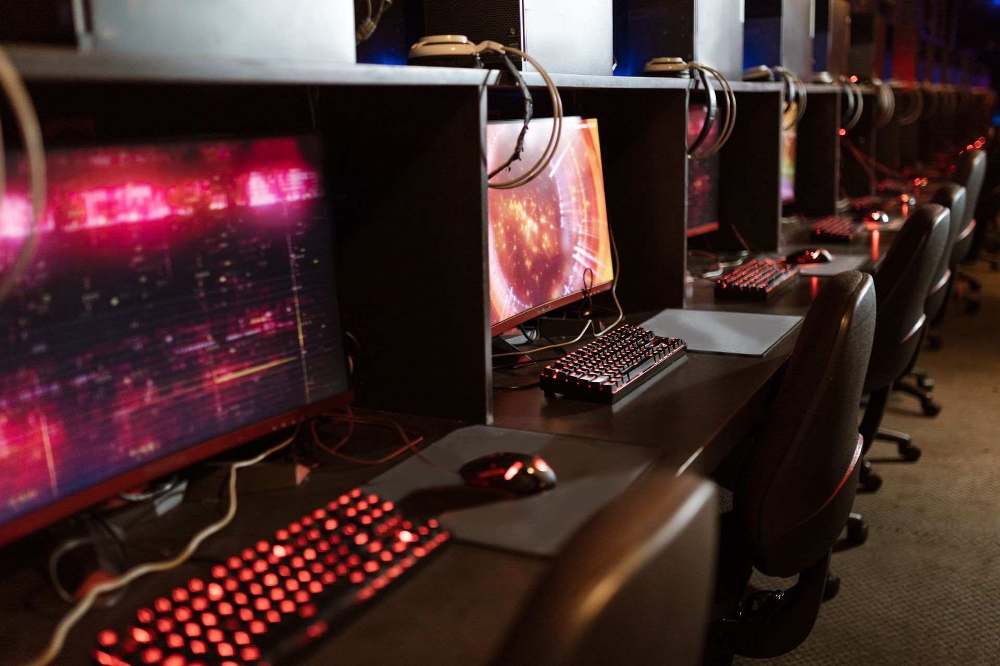

Estatísticas
Acompanhamento de informações relacionadas ao desempenho do jogador.
PROJETO HAPPY GAME
A partir dos dados levantados na pesquisa, desenvolvemos a proposta de uma plataforma voltada para jogadores que desejam acompanhar suas informações e evolução dentro dos games.
O Happy Game é uma proposta de plataforma voltada para o acompanhamento do desempenho dos jogadores dentro dos seus jogos.
A ideia é reunir informações relacionadas às partidas em um único ambiente, permitindo que o jogador tenha uma visão mais organizada sobre seu desempenho.
A plataforma também busca atender diferentes perfis de jogadores, desde aqueles que jogam casualmente até jogadores interessados em acompanhar sua evolução no cenário competitivo.

PROPOSTA DA APLICAÇÃO
Recursos planejados para atender às necessidades identificadas durante a pesquisa.
Acompanhamento de informações relacionadas ao desempenho do jogador.
Consulta de partidas anteriores e informações relacionadas ao desempenho.
Organização das informações e estatísticas de cada jogador.
Visualização da evolução do jogador ao longo de suas partidas.
Possibilidade de reunir e compartilhar os melhores momentos das partidas.
Proposta de suporte para diferentes jogos presentes no cenário gamer.